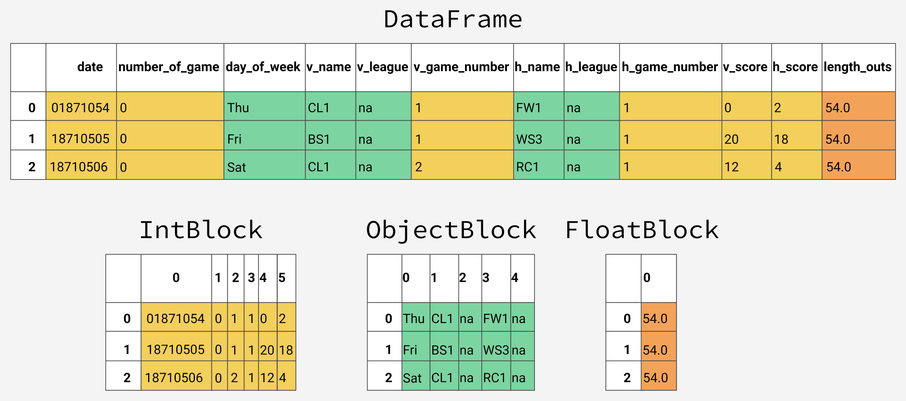
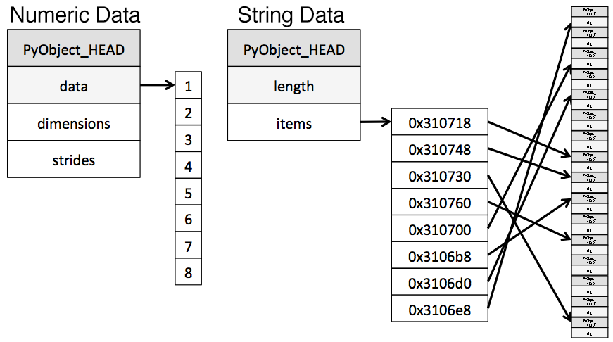

Tips for reducing memory usage by up to 90%
When working using pandas with small data (under 100 megabytes), performance is rarely a problem. When we move to larger data (100 megabytes to multiple gigabytes), performance issues can make run times much longer, and cause code to fail entirely due to insufficient memory.
While tools like Spark can handle large data sets (100 gigabytes to multiple terabytes), taking full advantage of their capabilities usually requires more expensive hardware. And unlike pandas, they lack rich feature sets for high quality data cleaning, exploration, and analysis. For medium-sized data, we're better off trying to get more out of pandas, rather than switching to a different tool.
In this post, we'll learn about memory usage with pandas, how to reduce a dataframe's memory footprint by almost 90%, simply by selecting the appropriate data types for columns.
Working with baseball game logs
We'll be working with data from 130 years of major league baseball games, originally sourced from Retrosheet.
Originally the data was in 127 separate CSV files, however we have used csvkit to merge the files, and have added column names into the first row. If you'd like to download our version of the data to follow along with this post, we have made it available here.
Let's start by importing our data and taking a look at the first five rows.
import pandas as pd
gl = pd.read_csv('game_logs.csv')
gl.head()
We've summarized some of the important columns below, however if you'd like to see a guide to all columns we have created a data dictionary for the whole data set:
date— Date of the game.v_name— Visiting team name.v_league— Visiting team league.h_name— Home team name.h_league— Home team league.v_score— Visiting team score.h_score— Home team score.v_line_score— Visiting team line score, eg010000(10)00.h_line_score— Home team line score, eg010000(10)0X.park_id— ID of the park where the game was held.attendance— Game attendance.
We can use the DataFrame.info() method to give us some high level information about our dataframe, including its size, information about data types and memory usage.
By default, pandas approximates of the memory usage of the dataframe to save time. Because we're interested in accuracy, we'll set the memory_usage parameter to 'deep' to get an accurate number.
gl.info(memory_usage='deep')
<class 'pandas.core.frame.DataFrame'>
RangeIndex: 171907 entries, 0 to 171906
Columns: 161 entries, date to acquisition_info
dtypes: float64(77), int64(6), object(78)
memory usage: 861.6 MB
We can see that we have 171,907 rows and 161 columns. Pandas has automatically detected types for us, with 83 numeric columns and 78 object columns. Object columns are used for strings or where a column contains mixed data types.
So we can get a better understanding of where we can reduce this memory usage, let's take a look into how pandas stores data in memory.
The Internal Representation of a Dataframe
Under the hood, pandas groups the columns into blocks of values of the same type. Here's a preview of how pandas stores the first twelve columns of our dataframe.
You'll notice that the blocks don't maintain references to the column names. This is because blocks are optimized for storing the actual values in the dataframe. The BlockManager class is responsible for maintaining the mapping between the row and column indexes and the actual blocks. It acts as an API that provides access to the underlying data. Whenever we select, edit, or delete values, the dataframe class interfaces with the BlockManager class to translate our requests to function and method calls.
Each type has a specialized class in the pandas.core.internals module. Pandas uses the ObjectBlock class to represent the block containing string columns, and the FloatBlock class to represent the block containing float columns. For blocks representing numeric values like integers and floats, pandas combines the columns and stores them as a NumPy ndarray. The NumPy ndarray is built around a C array, and the values are stored in a contiguous block of memory. Due to this storage scheme, accessing a slice of values is incredibly fast.
Because each data type is stored separately, we're going to examine the memory usage by data type. Let's start by looking at the average memory usage for data type.
for dtype in ['float','int','object']:
selected_dtype = gl.select_dtypes(include=[dtype])
mean_usage_b = selected_dtype.memory_usage(deep=True).mean()
mean_usage_mb = mean_usage_b / 1024 ** 2
print("Average memory usage for {} columns: {:03.2f} MB".format(dtype,mean_usage_mb))
Average memory usage for float columns: 1.29 MB
Average memory usage for int columns: 1.12 MB
Average memory usage for object columns: 9.53 MB
Immediately we can see that most of our memory is used by our 78 object columns. We'll look at those later, but first lets see if we can improve on the memory usage for our numeric columns.
Understanding Subtypes
As we mentioned briefly before, under the hood pandas represents numeric values as NumPy ndarrays and stores them in a continuous block of memory. This storage model consumes less space and allows us to access the values themselves quickly. Because pandas represents each value of the same type using the same number of bytes, and a NumPy ndarray stores the number of values, pandas can return the number of bytes a numeric column consumes quickly and accurately.
Many types in pandas have multiple subtypes that can use fewer bytes to represent each value. For example, the float type has the float16, float32, and float64 subtypes. The number portion of a type's name indicates the number of bits that type uses to represent values. For example, the subtypes we just listed use 2, 4, 8 and 16 bytes, respectively. The following table shows the subtypes for the most common pandas types:
| memory usage | float | int | uint | datetime | bool | object |
|---|---|---|---|---|---|---|
| 1 bytes | int8 | uint8 | bool | |||
| 2 bytes | float16 | int16 | uint16 | |||
| 4 bytes | float32 | int32 | uint32 | |||
| 8 bytes | float64 | int64 | uint64 | datetime64 | ||
| variable | object |
An int8 value uses 1 byte (or 8 bits) to store a value, and can represent 256 values (2^8) in binary. This means that we can use this subtype to represent values ranging from -128 to 127 (including 0).
We can use the numpy.iinfo class to verify the minimum and maximum values for each integer subtype. Let's look at an example:
import numpy as np
int_types = ["uint8", "int8", "int16"]
for it in int_types:
print(np.iinfo(it))
Machine parameters for uint8
---------------------------------------------------------------
min = 0
max = 255
---------------------------------------------------------------
Machine parameters for int8
---------------------------------------------------------------
min = -128
max = 127
---------------------------------------------------------------
Machine parameters for int16
---------------------------------------------------------------
min = -32768
max = 32767
---------------------------------------------------------------
We can see here the difference between uint (unsigned integers) and int (signed integers). Both types have the same capacity for storage, but by only storing positive values, unsigned integers allow us to be more efficient with our storage of columns that only contain positive values.
Optimizing Numeric Columns with Subtypes
We can use the function pd.to_numeric() to downcast our numeric types. We'll use DataFrame.select_dtypes to select only the integer columns, then we'll optimize the types and compare the memory usage.
# We're going to be calculating memory usage a lot,
# so we'll create a function to save us some time!
def mem_usage(pandas_obj):
if isinstance(pandas_obj,pd.DataFrame):
usage_b = pandas_obj.memory_usage(deep=True).sum()
else: # we assume if not a df it's a series
usage_b = pandas_obj.memory_usage(deep=True)
usage_mb = usage_b / 1024 ** 2 # convert bytes to megabytes
return "{:03.2f} MB".format(usage_mb)
gl_int = gl.select_dtypes(include=['int'])
converted_int = gl_int.apply(pd.to_numeric,downcast='unsigned')
print(mem_usage(gl_int))
print(mem_usage(converted_int))
compare_ints = pd.concat([gl_int.dtypes,converted_int.dtypes],axis=1)
compare_ints.columns = ['before','after']
compare_ints.apply(pd.Series.value_counts)
7.87 MB
1.48 MB
We can see a drop from 7.9 to 1.5 megabytes in memory usage, which is a more than 80% reduction. The overall impact on our original dataframe isn't massive though, because there are so few integer columns.
Lets do the same thing with our float columns.
gl_float = gl.select_dtypes(include=['float'])
converted_float = gl_float.apply(pd.to_numeric,downcast='float')
print(mem_usage(gl_float))
print(mem_usage(converted_float))
compare_floats = pd.concat([gl_float.dtypes,converted_float.dtypes],axis=1)
compare_floats.columns = ['before','after']
compare_floats.apply(pd.Series.value_counts)
100.99 MB
50.49 MB
We can see that all our float columns were converted from float64 to float32, giving us a 50% reduction in memory usage.
Let's create a copy of our original dataframe, assign these optimized numeric columns in place of the originals, and see what our overall memory usage is now.
optimized_gl = gl.copy()
optimized_gl[converted_int.columns] = converted_int
optimized_gl[converted_float.columns] = converted_float
print(mem_usage(gl))
print(mem_usage(optimized_gl))
861.57 MB
804.69 MB
While we've dramatically reduced the memory usage of our numeric columns, overall we've only reduced the memory usage of our dataframe by 7%. Most of our gains are going to come from optimizing the object types.
Before we do, let's take a closer look at how strings are stored in pandas compared to the numeric types
Comparing Numeric to String storage
The object type represents values using Python string objects, partly due to the lack of support for missing string values in NumPy. Because Python is a high-level, interpreted language, it doesn't have fine grained-control over how values in memory are stored.
This limitation causes strings to be stored in a fragmented way that consumes more memory and is slower to access. Each element in an object column is really a pointer that contains the "address" for the actual value's location in memory.
Below is a diagram showing how numeric data is stored in NumPy data types vs how strings are stored using Python's inbuilt types.
Diagram adapted from the excellent post Why Python Is Slow.
You may have noticed our chart earlier described object types as using a variable amount of memory. While each pointer takes up 1 byte of memory, each actual string value uses the same amount of memory that string would use if stored individually in Python. Let's use sys.getsizeof() to prove that out, first by looking at individual strings, and then items in a pandas series.
from sys import getsizeof
s1 = 'working out'
s2 = 'memory usage for'
s3 = 'strings in python is fun!'
s4 = 'strings in python is fun!'
for s in [s1, s2, s3, s4]:
print(getsizeof(s))
60
65
74
74
obj_series = pd.Series(['working out',
'memory usage for',
'strings in python is fun!',
'strings in python is fun!'])
obj_series.apply(getsizeof)
0 60
1 65
2 74
3 74
dtype: int64
You can see that the size of strings when stored in a pandas series are identical to their usage as separate strings in Python.
Optimizing object types using categoricals
Pandas introduced Categoricals in version 0.15. The category type uses integer values under the hood to represent the values in a column, rather than the raw values. Pandas uses a separate mapping dictionary that maps the integer values to the raw ones. This arrangement is useful whenever a column contains a limited set of values. When we convert a column to the category dtype, pandas uses the most space efficient int subtype that can represent all of the unique values in a column.
To get an overview of where we might be able to use this type to reduce memory, let's take a look at the number of unique values of each of our object types.
gl_obj = gl.select_dtypes(include=['object']).copy()
gl_obj.describe()
A quick glance reveals many columns where there are few unique values relative to the overall ~172,000 games in our data set.
Before we dive too far in, we'll start by selecting just one of our object columns, and looking at what happens behind the scenes when we convert it to the categorical type. We'll use the second column of our data set, day_of_week.
Looking at the table above. we can see that it only contains seven unique values. We'll convert it to categorical by using the .astype() method.
dow = gl_obj.day_of_week
print(dow.head())
dow_cat = dow.astype('category')
print(dow_cat.head())
0 Thu
1 Fri
2 Sat
3 Mon
4 Tue
Name: day_of_week, dtype: object
0 Thu
1 Fri
2 Sat
3 Mon
4 Tue
Name: day_of_week, dtype: category
Categories (7, object): [Fri, Mon, Sat, Sun, Thu, Tue, Wed]
As you can see, apart from the fact that the type of the column has changed, the data looks exactly the same. Let's take a look under the hood at what's happening.
In the following code, we use the Series.cat.codes attribute to return the integer values the category type uses to represent each value.
dow_cat.head().cat.codes
0 4
1 0
2 2
3 1
4 5
dtype: int8
You can see that each unique value has been assigned an integer, and that the underlying datatype for the column is now int8. This column doesn't have any missing values, but if it did, the category subtype handles missing values by setting them to -1.
Lastly, let's look at the memory usage for this column before and after converting to the category type.
print(mem_usage(dow))
print(mem_usage(dow_cat))
9.84 MB
0.16 MB
We've gone from 9.8MB of memory usage to 0.16MB of memory usage, or a 98% reduction! Note that this particular column probably represents one of our best-case scenarios - a column with ~172,000 items of which there only 7 unique values.
While converting all of the columns to this type sounds appealing, it's important to be aware of the trade-offs. The biggest one is the inability to perform numerical computations. We can't do arithmetic with category columns or use methods like Series.min() and Series.max() without converting to a true numeric dtype first.
We should stick to using the category type primarily for object columns where less than 50% of the values are unique. If all of the values in a column are unique, the category type will end up using more memory. That's because the column is storing all of the raw string values in addition to the integer category codes. You can read more about the limitations of the category type in the pandas documentation.
We'll write a loop to iterate over each object column, check if the number of unique values is less than 50%, and if so, convert it to the category type.
converted_obj = pd.DataFrame()
for col in gl_obj.columns:
num_unique_values = len(gl_obj[col].unique())
num_total_values = len(gl_obj[col])
if num_unique_values / num_total_values < 0.5:
converted_obj.loc[:,col] = gl_obj[col].astype('category')
else:
converted_obj.loc[:,col] = gl_obj[col]
As before,
print(mem_usage(gl_obj))
print(mem_usage(converted_obj))
compare_obj = pd.concat([gl_obj.dtypes,converted_obj.dtypes],axis=1)
compare_obj.columns = ['before','after']
compare_obj.apply(pd.Series.value_counts)
752.72 MB
51.67 MB
In this case, all our object columns were converted to the category type, however this won't be the case with all data sets, so you should be sure to use the process above to check.
What's more, our memory usage for our object columns has gone from 752MB to 52MB, or a reduction of 93%. Let's combine this with the rest of our dataframe and see where we sit in relation to the 861MB memory usage we started with.
optimized_gl[converted_obj.columns] = converted_obj
mem_usage(optimized_gl)
'103.64 MB'
Wow, we've really made some progress! We have one more optimization we can make - if you remember back to our table of types, there was a datetime type that we can use for the first column of our data set.
date = optimized_gl.date
print(mem_usage(date))
date.head()
0.66 MB
0 18710504
1 18710505
2 18710506
3 18710508
4 18710509
Name: date, dtype: uint32
You may remember that this was read in as an integer type and already optimized to unint32. Because of this, converting it to datetime will actually double it's memory usage, as the datetime type is a 64 bit type. There's value in converting it to datetime anyway since it will allow us to more easily do time series analysis.
We'll convert using pandas.to_datetime() function, using the format parameter to tell it that our date data is stored YYYY-MM-DD.
optimized_gl['date'] = pd.to_datetime(date,format='%Y%m%d')
print(mem_usage(optimized_gl))
optimized_gl.date.head()
104.29 MB
0 1871-05-04
1 1871-05-05
2 1871-05-06
3 1871-05-08
4 1871-05-09
Name: date, dtype: datetime64[ns]
Selecting Types While Reading the Data In
So far, we've explored ways to reduce the memory footprint of an existing dataframe. By reading the dataframe in first and then iterating on ways to save memory, we were able to understand the amount of memory we can expect to save from each optimization better. As we mentioned earlier in the mission, however, we often won't have enough memory to represent all the values in a data set. How can we apply memory-saving techniques when we can't even create the dataframe in the first place?
Fortunately, we can specify the optimal column types when we read the data set in. The pandas.read_csv() function has a few different parameters that allow us to do this. The dtype parameter accepts a dictionary that has (string) column names as the keys and NumPy type objects as the values.
First, we'll store the final types of every column in a dictionary with keys for column names, first removing the date column since that needs to be treated separately.
dtypes = optimized_gl.drop('date',axis=1).dtypes
dtypes_col = dtypes.index
dtypes_type = [i.name for i in dtypes.values]
column_types = dict(zip(dtypes_col, dtypes_type))
# rather than print all 161 items, we'll
# sample 10 key/value pairs from the dict
# and print it nicely using prettyprint
preview = first2pairs = {key:value for key,value in list(column_types.items())[:10]}
import pprint
pp = pp = pprint.PrettyPrinter(indent=4)
pp.pprint(preview)
{ 'acquisition_info': 'category',
'h_caught_stealing': 'float32',
'h_player_1_name': 'category',
'h_player_9_name': 'category',
'v_assists': 'float32',
'v_first_catcher_interference': 'float32',
'v_grounded_into_double': 'float32',
'v_player_1_id': 'category',
'v_player_3_id': 'category',
'v_player_5_id': 'category'}
Now we can use the dictionary, along with a few parameters for the date to read in the data with the correct types in a few lines:
read_and_optimized = pd.read_csv('game_logs.csv',dtype=column_types,parse_dates=['date'],infer_datetime_format=True)
print(mem_usage(read_and_optimized))
read_and_optimized.head()
104.28 MB
By optimizing the columns, we've managed to reduce the memory usage in pandas from 861.6 MB to 104.28 MB - an impressive 88% reduction!
Analyzing baseball games
Now that we've optimized our data, we can perform some analysis. Let's start by looking at the distribution of game days.
optimized_gl['year'] = optimized_gl.date.dt.year
games_per_day = optimized_gl.pivot_table(index='year',columns='day_of_week',values='date',aggfunc=len)
games_per_day = games_per_day.divide(games_per_day.sum(axis=1),axis=0)
ax = games_per_day.plot(kind='area',stacked='true')
ax.legend(loc='upper right')
ax.set_ylim(0,1)
plt.show()
We can see that before the 1920s, Sunday baseball games were rare on Sundays before coming gradually more popular through the latter half of last century.
We can also see pretty clearly that the distribution of game days has been relatively static for the last 50 years.
Let's also look at how game length has varied over the years.
game_lengths = optimized_gl.pivot_table(index='year', values='length_minutes')
game_lengths.reset_index().plot.scatter('year','length_minutes')
plt.show()
Looks like baseball games have continued to get longer from the 1940s onwards.
Summary and Next Steps
We've learned how pandas stores data using different types, and then we used that knowledge to reduce the memory usage of our pandas dataframe by almost 90%, just by using a few simple techniques:
- Downcasting numeric columns to more efficient types.
- Converting string columns to the categorical type.
If you'd like to dive into working with larger data in pandas some more, a lot of the content in this blog post is available in our interactive course Processing Large Datasets In Pandas Course, which you can start for free.